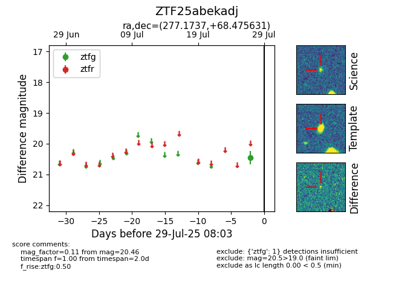

Target ZTF25abekadj at 2025-07-29 08:03, see:
FINK: fink-portal.org/ZTF25abekadj
Lasair: lasair-ztf.lsst.ac.uk/objects/ZTF25abekadj
ALeRCE: alerce.online/object/ZTF25abekadj
alt names
ZTF25abekadj (ztf,fink)
coordinates:
equatorial (ra, dec) = (277.1737,+68.47563)
galactic (l, b) = (98.7050,+27.16372)
photometry
last ztfg=20.46
1 ztfg detections
